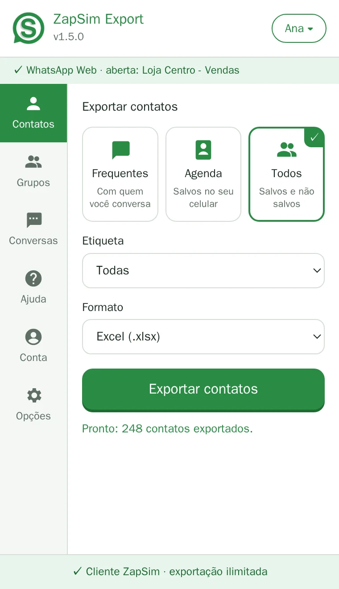
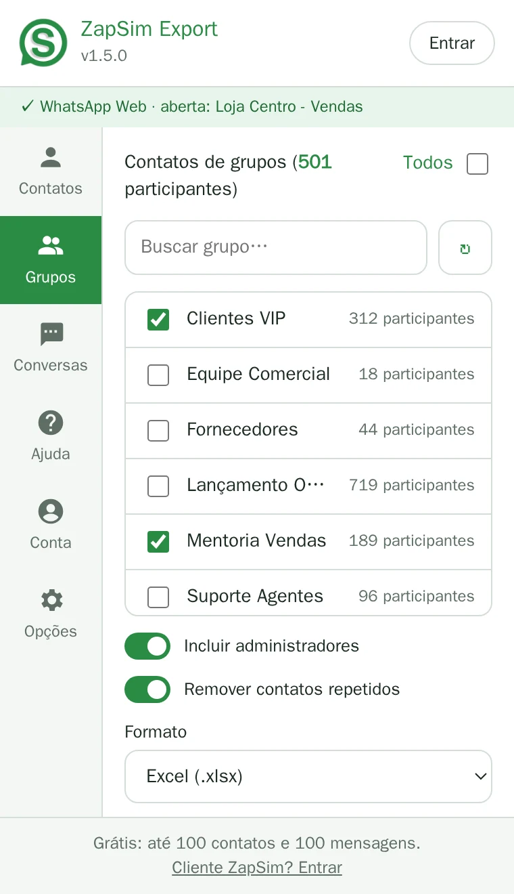
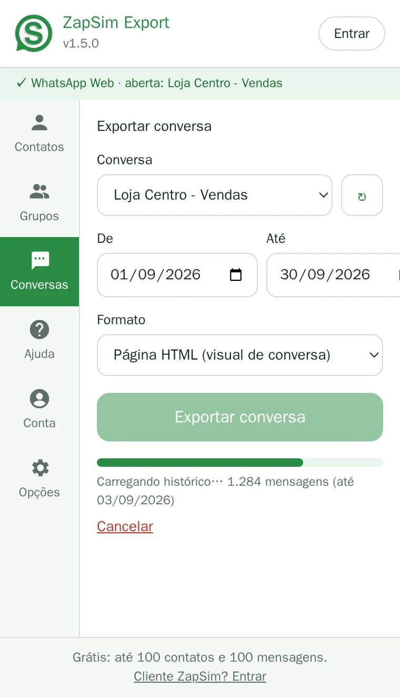

Contatos
Exporte quem conversa com você, sua agenda ou todos os contatos que o WhatsApp conhece.
FrequentesAgendaTodos
Nome, número e LID em Excel, CSV ou vCard, em poucos cliques. Grátis até 100 contatos por exportação — ilimitado para clientes ZapSim.

Contatos, grupos e conversas, com os dados que importam, no formato que você usa.
Exporte quem conversa com você, sua agenda ou todos os contatos que o WhatsApp conhece.
Marque um ou vários grupos e baixe todos os participantes de uma vez, com administradores identificados e sem repetidos.
Salve uma conversa inteira por período. A extensão carrega o histórico sozinha, mesmo em conversas longas.
Cada contato sai com nome salvo, nome público, número, país, DDI e o LID — o novo identificador do WhatsApp.
No WhatsApp Business, exporte só os contatos de uma etiqueta: clientes, leads, fornecedores…
Planilha Excel pronta, com filtros, ou CSV, vCard para o celular, JSON para sistemas, HTML e PDF.
Um formato sai no modelo oficial de importação de contatos do ZapSim: é só subir no painel.
Tudo é processado no seu computador. Nenhuma conversa ou contato é enviado para servidores.
Funciona na aba do WhatsApp Web que você já usa, num painel lateral do navegador. Nada para configurar.
Um painel ao lado do WhatsApp Web, com um menu para cada tarefa.


Grátis, no Microsoft Edge ou no Google Chrome.
Clique no ícone do ZapSim Export: o painel abre ao lado das suas conversas.
Contatos, grupos ou conversas, o formato, e pronto: o arquivo vai para a sua pasta de downloads.
Sem letras miúdas: o limite aparece antes de você exportar.
Já é cliente? Instale a extensão e entre no menu Conta com o e-mail e a senha do painel.
Suba a planilha no ZapSim e transforme o WhatsApp num atendimento de verdade: vários atendentes no mesmo número, chatbot e CRM — sem perder o toque humano.
Planos a partir de R$ 89/mês · 30 dias de garantia
Funciona no computador, com o WhatsApp Web aberto.
Quer ser avisado quando sair? Escreva para contato@zapsim.com.
Sim. Sem cadastro e sem cartão, você exporta até 100 contatos e 100 mensagens por exportação, quantas vezes quiser. Clientes ZapSim exportam sem limite.
Não. A extensão lê os dados no próprio WhatsApp Web aberto no seu navegador e salva o arquivo direto no seu computador. Nada é enviado para nós.
Se você é cliente ZapSim, abra o menu Conta da extensão e entre com o mesmo e-mail e senha do painel. Se ainda não é, conheça os planos do ZapSim, a partir de R$ 89/mês.
É um identificador que o WhatsApp passou a usar no lugar do número em algumas situações, principalmente em grupos. A extensão exporta o LID e, sempre que o WhatsApp informa, o número de telefone correspondente.
O WhatsApp às vezes só informa o LID de quem não está salvo na sua agenda e nunca conversou com você. Esses contatos aparecem no Excel e no CSV, mas ficam de fora do arquivo de importação do ZapSim, que exige número.
Sim. A extensão funciona no Microsoft Edge e no Google Chrome, no computador. Não funciona no celular.
Não. O ZapSim Export é uma ferramenta independente e não tem ligação com o WhatsApp ou a Meta.
Use os contatos com responsabilidade e de acordo com a LGPD. Mensagens não solicitadas (spam) são proibidas pelos nossos Termos de Uso e pelo próprio WhatsApp.